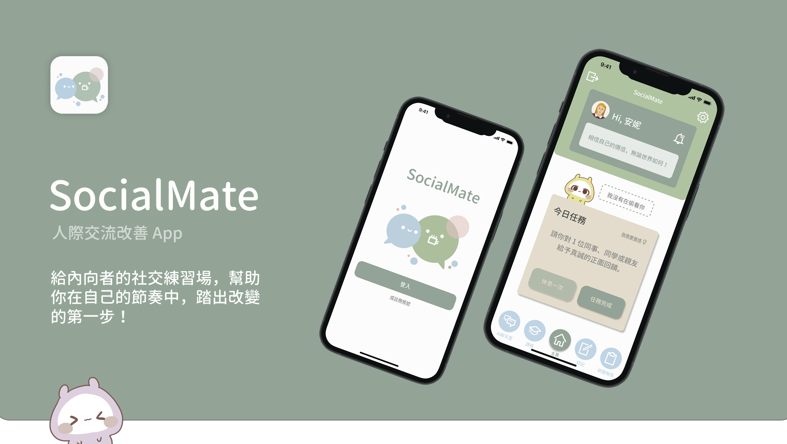

<!DOCTYPE html>
<html lang="zh-TW">
<head>
    <meta charset="UTF-8">
    <meta name="viewport" content="width=device-width, initial-scale=1.0">
    <title>Claudia Wang | 設計作品集</title>
    <script src="https://unpkg.com/react@18/umd/react.production.min.js" crossorigin></script>
    <script src="https://unpkg.com/react-dom@18/umd/react-dom.production.min.js" crossorigin></script>
    <script src="https://unpkg.com/@babel/standalone/babel.min.js"></script>
    <script src="https://cdn.tailwindcss.com"></script>
    <script src="https://unpkg.com/framer-motion@10.16.4/dist/framer-motion.js"></script>
    <script src="https://unpkg.com/lucide@latest"></script>
    
    <link rel="preconnect" href="https://fonts.googleapis.com">
    <link rel="preconnect" href="https://fonts.gstatic.com" crossorigin>
    <link href="https://fonts.googleapis.com/css2?family=Caveat:wght@700&display=swap" rel="stylesheet">

    <script>
        tailwind.config = {
            theme: {
                extend: {
                    colors: {
                        brand: {
                            canvas: '#FFFFFF',
                            bgLight: '#FBFBFB', 
                            textMain: '#0F172A',
                            textSub: '#475569',
                            accent: '#A3C6C4'   
                        }
                    },
                    fontFamily: {
                        sans: ['SF Pro Display', 'Inter', 'Noto Sans TC', 'sans-serif'],
                        cursive: ['Caveat', 'cursive'],
                    }
                }
            }
        }
    </script>
    <style>
        html { scroll-behavior: smooth; }
    </style>
</head>
<body class="bg-brand-canvas text-brand-textMain font-sans antialiased selection:bg-brand-accent selection:text-white">
    <div id="root"></div>

    <script type="text/babel">
        const { motion } = window.Motion;

        function App() {
            return (
                <div class="min-h-screen flex flex-col justify-between">
                    {/* 導覽列 */}
                    <nav class="max-w-7xl w-full mx-auto px-6 py-8 flex justify-between items-center">
                        <span class="text-3xl font-bold tracking-tight text-brand-accent font-cursive select-none">
                            CW
                        </span>
                        {/* 🌟 調整導覽列邏輯：首頁為當前 Active 狀態（帶底線），其餘按鈕改為滑動錨點 */}
                        <div class="space-x-6 md:space-x-8 text-sm font-medium text-brand-textSub">
                            <a href="#" class="text-brand-textMain border-b-2 border-brand-accent pb-1">首頁</a>
                            <a href="#projects" class="hover:text-brand-textMain transition-colors">設計作品集</a>
                            <a href="#about" class="hover:text-brand-textMain transition-colors">關於我</a>
                        </div>
                    </nav>

                    {/* 主內容區 */}
                    <main class="max-w-7xl w-full mx-auto px-6 pt-20 flex-grow">
                        {/* Hero 區塊 */}
                        <header class="max-w-7xl w-full mx-auto pt-10 pb-28">
                            <motion.div 
                                initial={{ opacity: 0, y: 30 }}
                                animate={{ opacity: 1, y: 0 }}
                                transition={{ duration: 0.8, ease: "easeOut" }}
                                class="max-w-3xl"
                            >
                                <h2 class="text-xs uppercase tracking-[0.2em] text-brand-accent font-semibold mb-4"></h2>
                                <h1 class="text-4xl md:text-6xl font-black tracking-tight leading-[1.15] text-brand-textMain mb-6">
                                    Hi!<br/>I'm <span class="text-brand-accent underline decoration-brand-accent underline-offset-8 decoration-2">Claudia Wang</span>
                                </h1>
                                <p class="text-xl md:text-2xl font-light text-brand-textSub leading-relaxed">
                                    比起純粹的技術，我更在乎作品帶給使用者的體驗與感受。
                                </p>
                            </motion.div>
                        </header>

                        {/* 作品列表：🌟 加上 id="projects" 供導覽列點擊滑動，並加上 scroll-mt-24 避免滾動後頂部太擁擠 */}
                        <section id="projects" class="space-y-20 pt-12 pb-24 scroll-mt-24">
                            <div class="flex items-center justify-between border-b border-slate-200 pb-4">
                                <h2 class="text-xl font-bold tracking-tight">設計作品集</h2>
                                <span class="text-xs text-brand-textSub uppercase tracking-widest">01 — 02</span>
                            </div>

                            <div class="space-y-20">
                                {/* 作品 01: CountBuddy */}
                                <motion.div 
                                    initial={{ opacity: 0, y: 40 }}
                                    whileInView={{ opacity: 1, y: 0 }}
                                    viewport={{ once: true, margin: "-100px" }}
                                    transition={{ duration: 0.8 }}
                                    class="group cursor-pointer bg-brand-bgLight rounded-2xl overflow-hidden border border-slate-200 transition-all duration-500 hover:border-slate-300 hover:shadow-[0_30px_60px_rgba(0,0,0,0.03)] p-6 flex flex-col"
                                    onClick={() => window.location.href = 'countbuddy.html'}
                                >
                                    {/* 上方：媒體展示區 */}
                                    <div class="bg-slate-950 rounded-xl overflow-hidden aspect-video flex justify-center items-center w-full shadow-inner">
                                        
                                    </div>
                                    
                                    {/* 下方：文字資訊區 */}
                                    <div class="pt-8 pb-4 px-2 space-y-4 flex-grow flex flex-col justify-between">
                                        <div>
                                            <h3 class="text-2xl font-black tracking-tight text-brand-textMain mb-3 group-hover:text-brand-accent transition-colors">
                                                遊戲化健身 App
                                            </h3>
                                            <p class="text-brand-textSub text-sm md:text-base font-light leading-relaxed text-justify">
                                                本專案是一套融合角色養成機制的居家健身應用程式。為了解決使用者在運動初期的倦怠感，設計了直覺簡易的運動計劃與養成「肌胸肉」角色機制。除了主導完整的 UI/UX 介面設計外，更獨立完成宣傳海報設計與動態宣傳短片剪輯。
                                            </p>
                                        </div>
                                        
                                        {/* 標籤列 */}
                                        <div class="flex flex-wrap gap-2 pt-2">
                                            <span class="bg-white text-slate-600 border border-slate-200 rounded px-3 py-1 text-xs font-medium font-mono">Figma</span>
                                            <span class="bg-white text-slate-600 border border-slate-200 rounded px-3 py-1 text-xs font-medium font-mono">Adobe Illustrator</span>
                                            <span class="bg-white text-slate-600 border border-slate-200 rounded px-3 py-1 text-xs font-medium font-mono">UI/UX Design</span>
                                            <span class="bg-white text-slate-600 border border-slate-200 rounded px-3 py-1 text-xs font-medium font-mono">Final Cut Pro</span>
                                            <span class="bg-white text-slate-600 border border-slate-200 rounded px-3 py-1 text-xs font-medium font-mono">Animation</span>
                                        </div>
                                    </div>
                                </motion.div>

                                {/* 作品 02: SocialMate */}
                                <motion.div 
                                    initial={{ opacity: 0, y: 40 }}
                                    whileInView={{ opacity: 1, y: 0 }}
                                    viewport={{ once: true, margin: "-100px" }}
                                    transition={{ duration: 0.8 }}
                                    class="group cursor-pointer bg-brand-bgLight rounded-2xl overflow-hidden border border-slate-200 transition-all duration-500 hover:border-slate-300 hover:shadow-[0_30px_60px_rgba(0,0,0,0.03)] p-6 flex flex-col"
                                    onClick={() => window.location.href = 'socialmate.html'}
                                >
                                    {/* 上方：媒體展示區 */}
                                    <div class="bg-slate-950 rounded-xl overflow-hidden aspect-video flex justify-center items-center w-full shadow-inner">
                                        
                                    </div>
                                    
                                    {/* 下方：文字資訊區 */}
                                    <div class="pt-8 pb-4 px-2 space-y-4 flex-grow flex flex-col justify-between">
                                        <div>
                                            <h3 class="text-2xl font-black tracking-tight text-brand-textMain mb-3 group-hover:text-brand-accent transition-colors">
                                                人際交流改善 App
                                            </h3>
                                            <p class="text-brand-textSub text-sm md:text-base font-light leading-relaxed text-justify">
                                                一款改善人際互動與社交連結的 App，透過每日社交任務、AI聊天室與可愛角色互動設計，幫助使用者逐漸提升自身的社交能力。本作品在的全國行動應用創新競賽中脫穎而出，入圍 MAIC 台灣區總決賽。除了作品本身，競賽中也呈現宣傳影片、完整介面原型以及參展海報。
                                            </p>
                                        </div>
                                        
                                        {/* 標籤列 */}
                                        <div class="flex flex-wrap gap-2 pt-2">
                                            <span class="bg-white text-slate-600 border border-slate-200 rounded px-3 py-1 text-xs font-medium font-mono">Figma</span>
                                            <span class="bg-white text-slate-600 border border-slate-200 rounded px-3 py-1 text-xs font-medium font-mono">UI/UX Research</span>
                                            <span class="bg-white text-slate-600 border border-slate-200 rounded px-3 py-1 text-xs font-medium font-mono">Final Cut Pro</span>
                                            <span class="bg-white text-slate-600 border border-slate-200 rounded px-3 py-1 text-xs font-medium font-mono">Animation</span>
                                        </div>
                                    </div>
                                </motion.div>
                            </div>
                        </section>
                      
                        {/* 關於我：🌟 補上 scroll-mt-24 確保平滑滾動落地時頂部留白完美 */}
                        <section id="about" class="mt-8 border-t border-slate-100 pt-16 max-w-7xl space-y-20 scroll-mt-24">
                            {/* 關於我個人基本資訊 */}
                            <div class="space-y-4">
                                <h2 class="text-xs uppercase tracking-[0.2em] text-brand-accent font-semibold">關於我</h2>
                                <div class="space-y-3 max-w-3xl">
                                    <h3 class="text-2xl font-black tracking-tight text-brand-textMain">
                                        王雨晴 <span class="text-sm font-normal text-brand-textSub font-mono ml-2">Claudia Wang</span>
                                    </h3>
                                    <p class="text-sm font-medium text-brand-textSub">國立臺北教育大學 數位科技設計學系 畢業</p>
                                    <p class="text-brand-textSub leading-relaxed font-light text-base text-justify pt-2">
                                        我在學期間專注於 UI/UX 介面規劃與視覺設計，並具備基礎程式設計與影片剪輯的能力。我喜歡從日常觀察中發現問題，並透過設計創造出直覺、有溫度且貼近使用者需求的體驗。
                                    </p>
                                </div>
                            </div>

                            {/* 設計理念 */}
                            <div class="space-y-4 border-t border-slate-100/60 pt-12">
                                <h2 class="text-xs uppercase tracking-[0.2em] text-brand-accent font-semibold">設計理念</h2>
                                <div class="space-y-4 max-w-3xl">
                                    <p class="text-2xl md:text-3xl font-light tracking-tight leading-relaxed text-brand-textMain">
                                        「我相信設計不只是解決問題，也是在科技與人之間建立連結，並帶來好的使用體驗。」
                                    </p>
                                    <p class="text-brand-textSub leading-relaxed font-light text-base text-justify">
                                        {/* 🌟 已將 Claudia 改為第一人稱「我的設計」，讀起來更親切一體 */}
                                        我的設計重視使用者感受、視覺溝通與使用流暢性，並利用各種數位設計與 AI 工具，將想法變為吸引人的數位作品。
                                    </p>
                                </div>
                            </div>
                        </section>
                    </main>

                    {/* 頁尾 */}
                    <footer class="bg-brand-bgLight border-t border-slate-100 mt-40">
                        <div class="max-w-7xl w-full mx-auto px-6 py-16 flex flex-col md:flex-row justify-between items-center gap-8">
                            <span class="text-sm font-light text-brand-textSub">© 2026 Claudia Wang.</span>
                        </div>
                    </footer>
                </div>
            );
        }

        const root = ReactDOM.createRoot(document.getElementById('root'));
        root.render(<App />);
        setTimeout(() => lucide.createIcons(), 100);
    </script>
</body>
</html>
